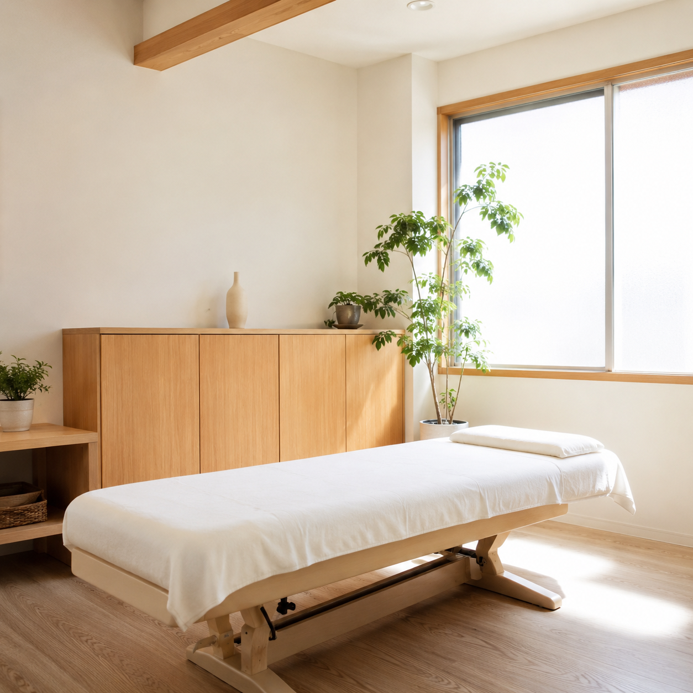

玉島で働く方・子育て中の方に寄り添う整骨院です
ながら整骨院は、倉敷市玉島で地域の皆さまの身体に寄り添ってまいりました。デスクワークによる肩こりや腰痛、産後の骨盤の歪みなど、日々の暮らしの中で積み重なる不調は、表面的な対処だけでは繰り返してしまうことが少なくありません。当院では国家資格を持つ施術者が、お一人おひとりの身体の状態を丁寧に確認し、痛みの根本原因に向き合った施術をご提案します。施術内容や料金は事前にわかりやすくご説明し、ご納得いただいたうえで進めてまいります。お仕事やご家庭で忙しい毎日でも通いやすいよう、夜間や土日にも対応し、ネットやLINEからいつでもご予約いただけます。清潔で落ち着いた院内で、安心して身体を委ねていただける時間をお届けします。
一つでも当てはまる方は、我慢せずに一度ご相談ください。痛みの原因に向き合い、根本からの改善を目指します。
痛みを感じていても、「忙しくて時間がない」「どこへ行けばいいかわからない」と、つい後回しにしていませんか。ながら整骨院は、その"通いにくさ"そのものをなくしました。
だからこそ、ながら整骨院は「通い続けられること」にこだわりました。従来の整骨院にありがちな“予約しづらい・料金がわかりにくい・時間が合わない”を、一つずつ解消しています。
お仕事や家事で電話できない時間帯でも、スマホからいつでもご予約が完結。思い立ったその場で、待たずに予約できます。
来院前にメニューと料金をはっきりご案内。「いくらかかるかわからない」という不安なく、納得してから施術を受けられます。
仕事帰りや子育ての合間にも通える営業時間。「通いたくても時間が合わない」を解消し、続けやすい通院をかなえます。
交通事故のむち打ち、産後の骨盤、スポーツ障害まで。国家資格を持つ施術者が、お悩みに合わせて専門的に対応します。
自然光が差し込む清潔な院内で、安心して施術を受けていただけます。
